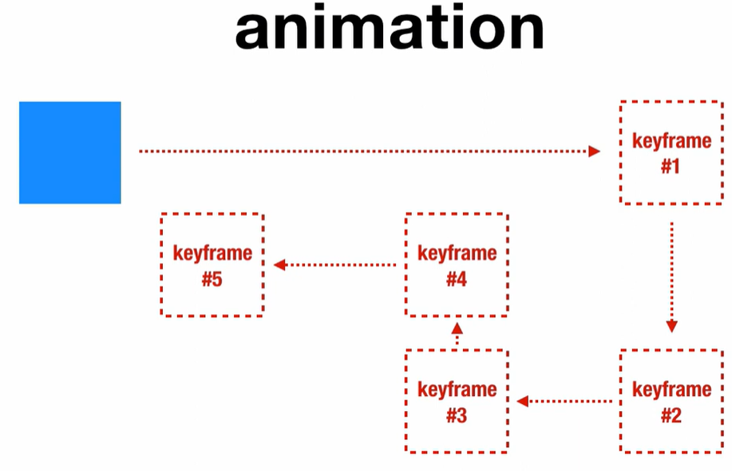

Animation
- animation tidak sama sepert transition
- animation mempunyai keyframe
nilai apa saja yang ada di keyframe
- [name] - animation variable
- [duration] - same like transition
- [timing-function] - same like transition
- [delay]- same like transition
- [iteration-count] - mau berapa kali di ulang | atau mau diulang loop
- [direction] - normal | reverse | alternate | alternate-reverse
- [fill-mode] - none | forwards | backwards | both
- [play-state] - running | paused
Contoh keyframe

Syntax untuk keyframe
@keyframe [animation-name] {
from {
[property-css]
}
to {
[property-css]
}
}
Contoh pengunaan animation
Kita juga boleh menggunakan % untuk from ke to
Terjadi ketika halaman di refresh tanpa hover
iteration-count
Mengulang sebanyak 2 kali
Loop
direction
Normal
Reverse
alternate
alternate-reverse
fill-mode
forward